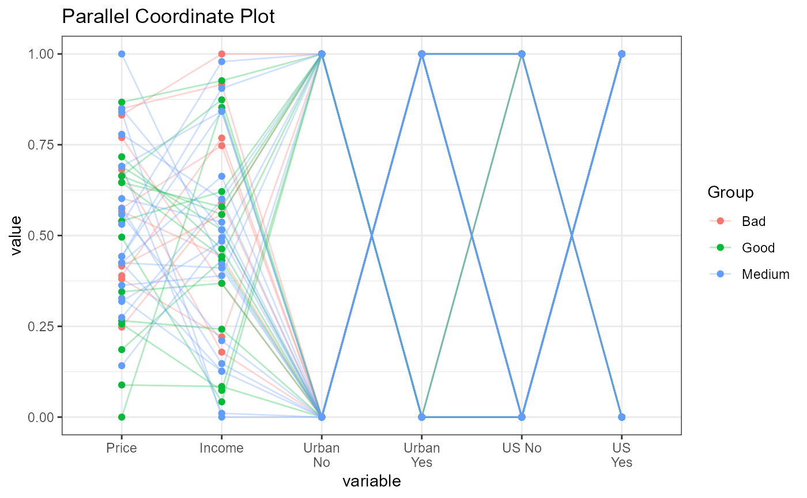
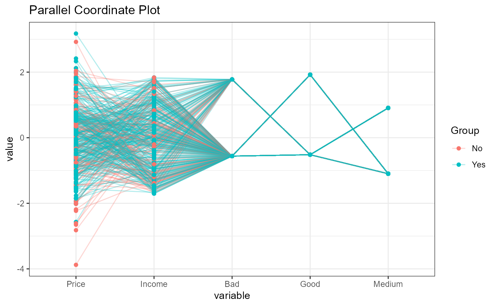

Parallel Co-ordinate plots
ExpParcoord.RdThis function creates parallel Co-ordinate plots
ExpParcoord (data,Group=NULL,Stsize=NULL,Nvar=NULL,Cvar=NULL,scale=NULL)
Arguments
| data | Input dataframe or data.table |
|---|---|
| Group | stratification variables |
| Stsize | vector of startum sample sizes |
| Nvar | vector of numerice variables, default it will consider all the numeric variable from data |
| Cvar | vector of categorical variables, default it will consider all the categorical variable |
| scale | scale the variables in the parallel coordinate plot (Default normailized with minimum of the variable is zero and maximum of the variable is one) (see ggparcoord details for more scale options) |
Value
Parallel Co-ordinate plots
Details
The Parallel Co-ordinate plots having the functionalities of visulization for sample rows if data size large. Also data can be stratified basis of Target or group variables. It will normalize all numeric variables between 0 and 1 also having other standardization options. It will automatically make dummy (1,0) variables for categorical variables
See also
Examples
CData = ISLR::Carseats # Defualt ExpParcoord funciton ExpParcoord(CData,Group=NULL,Stsize=NULL, Nvar=c("Price","Income","Advertising","Population","Age","Education"))# With Stratified rows and selected columns only ExpParcoord(CData,Group="ShelveLoc",Stsize=c(10,15,20), Nvar=c("Price","Income"),Cvar=c("Urban","US"))# Without stratification ExpParcoord(CData,Group="ShelveLoc",Nvar=c("Price","Income"), Cvar=c("Urban","US"),scale=NULL)# Scale changed std: univariately, subtract mean and divide by standard deviation ExpParcoord(CData,Group="US",Nvar=c("Price","Income"), Cvar=c("ShelveLoc"),scale="std")# Selected numeric variables ExpParcoord(CData,Group="ShelveLoc",Stsize=c(10,15,20), Nvar=c("Price","Income","Advertising","Population","Age","Education"))